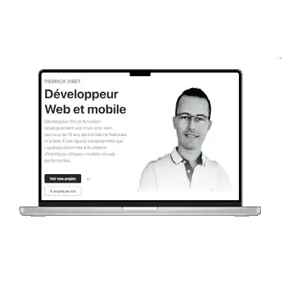
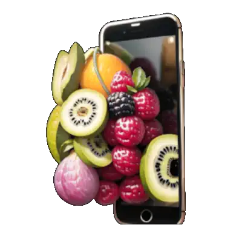

Pierrick VIRET Développeur Web et mobile
Pierrick VIRET
Développeur Web et mobile
Développeur iOS en formation développement web front-end. Mon parcours de 19 ans dans la Marine Nationale m'a doté d'une rigueur que j'applique désormais à la création d'interfaces utilisateur mobiles et web performantes.
Faites décoller votre projet !
me contacterProjects Personnels
-
Site internet
New
Portefolio: Création de ce site en HTML5/CSS3/Tailwind CSS.
 -
Application Mobile
JAN 2025
MarmotMonitor: gestion des premiers jours d'un enfant
-
Application Mobile
2023
Reciplease: application de recette de cuisine

Compétences
Web
HTML5 / CSS3 / JavaScript / Tailwind CSS
Mobile
Swift / SwiftUI / Flutter
Outils
VSCode / XCode / Git / Github
Languages
Java / PHP / Python
Frameworks
Laravel / Symfony / Angular / Vue.js / Spring Boot
Données
SQL / MySQL / API REST
Maîtrisé
En apprentissage
Parcours Professionnel
-
2024 - Présent
Développeur Web Full Stack
Campus Numérique in the Alps
Formation et développement de compétences en HTML5, CSS3, JavaScript et PHP.
HTML5 CSS3 JavaScript Tailwind CSS -
2023 - 2024
Développeur iOS
OpenClassrooms
Formation et développement d'applications mobiles natives pour iOS en utilisant Swift et SwiftUI. Réalisation de projets concrets comme MarmotMonitor et Reciplease.
Swift SwiftUI iOS -
2005 - 2024
Marine Nationale
Opérateur embarqué
19 ans de service au sein de la Marine Nationale française. Acquisition de compétences en rigueur, méthode et travail d'équipe. Gestion de projets techniques dans des environnements exigeants.
- Leadership
- Gestion de projet
- Rigueur